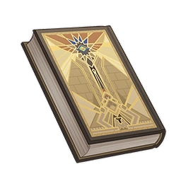

Sumeru · Books & Literature
The Lay of Al-Ahmar
This Sumeru quest book preserves a desert legend of King Deshret’s sorrow, maze, search for forbidden knowledge, and the fall of his royal city, with the text itself keeping its history uncertain.

A Desert Legend, Not a Chronicle
The Lay of Al-Ahmar is a single-volume Sumeru quest book kept in the Akademiya’s House of Daena. It presents itself as a tale told by desert dwellers: its repeated “they say” framing marks this as a legendary account, not an eyewitness history.
The poem calls Al-Ahmar a king of warriors, horticulturists, and sages who ruled the winds, moonlit dunes, and a thousand and one Jinn. These epithets became part of later accounts of King Deshret, but the Lay’s own framing keeps its claims in the realm of tradition.
The Son of the Sky and the Mourning King
The Lay says Al-Ahmar was a “son of the sky,” whose rule drew the faith of three great tribes and the Jinn. This is the book’s legendary origin story, not an independently confirmed statement about his parentage.
It also calls him the Mourning King. When he looked to the sky and remembered a boundless paradise above and a merciless reign long past, even music and roses could not lift his grief. The poem leaves those memories unnamed, so the passage does not by itself identify a particular lost people or era.
The Maze and the Search for Forbidden Knowledge
After his retainers’ lies, Al-Ahmar is said to have spent “a hundred years and a hundred years further” building a vast maze, then secluded himself inside it in search of forbidden knowledge and an elixir that could free him from mortal form.
The doubled hundred years belongs to the poem’s stylized language. The Lay supplies a legendary motive and sequence; it is not a precise chronology of Deshret’s reign or a technical account of his research.
The Fallen City and the Unverified Mind
The poem ends with an earthquake and sandstorm that bring down the royal city’s thousand and one pillars. It says that countless people vanish and that the survivors are made blind and mute for benefiting from forbidden knowledge. That is the Lay’s telling of the disaster, not a complete account of every survivor’s fate.
The Lay also claims that Deshret separated his mind from his body and spread it through the structures of his kingdom, connecting it to his people. Later in-game scholarship treats that dispersal as unsupported elsewhere; it should not be presented as confirmed history. The book’s separation-of-mind claim has separate support in the Scarlet Sand Slate, but the wider network described here remains unverified.
This is an original CoreGG reading guide, not an official HoYoverse article or a reproduction of the game text. Source links below identify the records used so you can check the original context.
Sources & references
Check these sources for the original game text and reference trail.